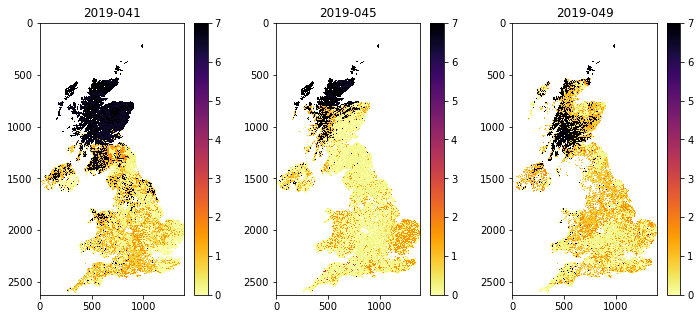
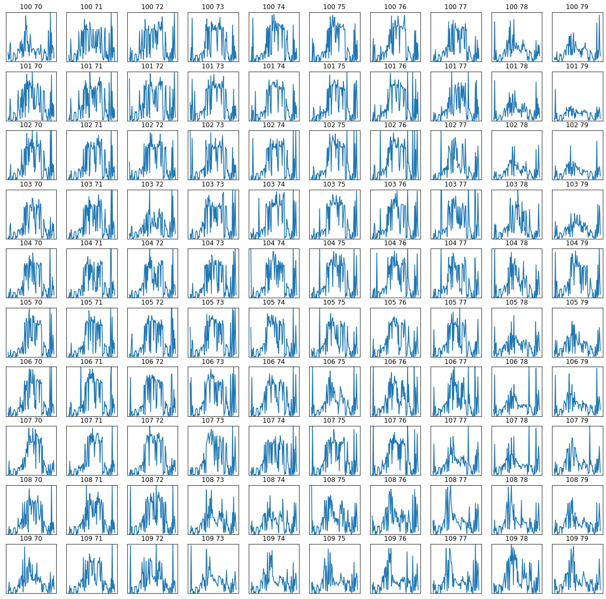

033 GDAL: time series¶
Purpose¶
In this section, we’ll continue to look at the MODIS LAI, with a view to forming a time series dataset. AT the end of this session, you will be able to generate a 3D numpy array of some MODIS geophysical variable for a selcted area and time.
Prerequisites¶
You must make sure you can recall the details of the work covered in 030_GDAL_mosaicing_and_masking. You will also need to know how to do graph plotting, including sub-figures and errorbars, and image display.
Test¶
You should run a NASA account test if you have not already done so.
Timeseries¶
We can conveniently generate a timeseries dataset using the gdal VRT file approach we used in 027_GDAL_mosaicing_and_masking.
In this case, the main process would be:
- initialise band name list bnames
- initialise list sds_set
- loop over some set of doy values:
- retrieve an SDS for each doy
- make a band name for the doy/year
- stitch tiles together into one VRT
- append the new SDS to the list sds_set
- append the band name to the list bnames
import gdal
from geog0111.modis import Modis
kwargs = {
'tile' : ['h17v03','h18v03'],
'product' : 'MCD15A3H',
'sds' : 'Lai_500m',
}
year = 2019
# list of doys we want
# - every 4 days for MCD15A3H
doys = [41,45,49]
modis = Modis(**kwargs)
# initialise list sds_set
sds_set = []
bnames = []
# loop over some set of doy values:
for doy in doys:
# retrieve an SDS for each doy
files,sds = modis.get_files(year,doy)
# choose only the first SDS for now
this_sds = sds[0]
# make a band name for the doy/year
bandname = f'{year}-{doy:0>3d}'
# stitch tiles together into one VRT
# called ofile
ofile = f"work/stitch_{modis.product}.{doy}.vrt"
stitch_vrt = gdal.BuildVRT(ofile,this_sds)
del stitch_vrt
# append the new SDS to the list sds_set
sds_set.append(ofile)
# append the band name to the list bnames
bnames.append(bandname)
print(sds_set)
print(bnames)
['work/stitch_MCD15A3H.41.vrt', 'work/stitch_MCD15A3H.45.vrt', 'work/stitch_MCD15A3H.49.vrt']
['2019-041', '2019-045', '2019-049']
Now we have a set of SDS we want to put them into a VRT file to represent the time series. We do this as we have previously, specifying the outoput name work/stitch_set.vrt here, and ythe listr of SDS that goes in to the time series,sds_set here:
# build a VRT "work/stitch_set.vrt"
stitch_vrt = gdal.BuildVRT("work/stitch_set.vrt", sds_set,separate=True)
del stitch_vrt
# test it by reading and plotting
g = gdal.Open("work/stitch_set.vrt")
data = g.ReadAsArray()
print(data.shape)
(3, 2400, 4800)
The dataset is now 3D. The first dimensions represent the time samples, so:
data[0] -> bnames[0]
etc.
import numpy as np
for i in range(data.shape[0]):
print(f'band {bnames[i]} -> mean {np.mean(data[i])}')
band 2019-041 -> mean 166.24298064236112
band 2019-045 -> mean 166.25176796875
band 2019-049 -> mean 165.74304947916667
Exercise 1¶
We have seen in 027_GDAL_mosaicing_and_masking that you can use gdal to creat a GeoTiff format image, for example with:
g = gdal.Warp(output_name, input_name ,format='GTiff',options=['COMPRESS=LZW'])
g.FlushCache()
Convert the
gdalfilework/stitch_set.vrtto a more portable GeoTiff file calledwork/stitch_set.tifConfirm that this has worked by reading and displaying data from the file
# ANSWER
import gdal
# Convert the `gdal` file `work/stitch_set.vrt` to a
# more portable GeoTiff file called `work/stitch_set.tif`
# set up the filenames
infile = 'work/stitch_set.vrt'
outfile = 'work/stitch_set.tif'
# convert using gdal.Warp or similar
g = gdal.Warp(outfile, infile ,format='GTiff',options=['COMPRESS=LZW'])
# force write to disk
g.FlushCache()
import matplotlib.pyplot as plt
# Confirm that this has worked by reading and
# displaying data from the file
# test it by reading and plotting
g = gdal.Open("work/stitch_set.tif")
data = g.ReadAsArray()
fig, axs = plt.subplots(1,3,figsize=(20,2))
axs = axs.flatten()
for i in range(data.shape[0]):
im = axs[i].imshow(data[i],vmax=7,\
cmap=plt.cm.inferno_r,interpolation='nearest')
fig.colorbar(im, ax=axs[i])
axs[i].set_title(bnames[i])

Cut out the UK and visualise as before:
# subset and display
warp_args = {
'dstNodata' : 255,
'format' : 'MEM',
'cropToCutline' : True,
'cutlineWhere' : "FIPS='UK'",
'cutlineDSName' : 'data/TM_WORLD_BORDERS-0.3.shp'
}
g = gdal.Warp("", "work/stitch_set.vrt",**warp_args)
data = g.ReadAsArray()*0.1
print(data.shape)
(3, 2623, 1394)
import matplotlib.pyplot as plt
fig, axs = plt.subplots(1,3,figsize=(12,5))
axs = axs.flatten()
for i in range(data.shape[0]):
im = axs[i].imshow(data[i],vmax=7,\
cmap=plt.cm.inferno_r,interpolation='nearest')
fig.colorbar(im, ax=axs[i])
axs[i].set_title(bnames[i])

Modis.get_modis¶
For convenience, we can again use the function Modis.get_modis to combine these, simply by passing a list of doy values, rather than a single doy.
import gdal
from geog0111.modis import Modis
import matplotlib.pyplot as plt
kwargs = {
'tile' : ['h17v03','h18v03'],
'product' : 'MCD15A3H',
'sds' : 'Lai_500m',
}
year = 2019
# list of doys we want
doys = [41,45,49]
modis = Modis(**kwargs)
warp_args = {
'dstNodata' : 255,
'format' : 'MEM',
'cropToCutline' : True,
'cutlineWhere' : "FIPS='UK'",
'cutlineDSName' : 'data/TM_WORLD_BORDERS-0.3.shp'
}
mfiles = modis.get_modis(year,doys,warp_args=warp_args)
print(mfiles.keys())
dict_keys(['Fpar_500m', 'Lai_500m', 'FparLai_QC', 'FparExtra_QC', 'FparStdDev_500m', 'LaiStdDev_500m', 'bandnames'])
Now let’s mask out invalid data points (> 10.0 when scaled by 0.1), and display the results:
import numpy as np
g = gdal.Open(mfiles['Lai_500m'])
# dataset and band nanes
data = g.ReadAsArray()*0.1
# valid mask
data[data>10.0] = np.nan
bnames = mfiles['bandnames']
print(data.shape)
(3, 2623, 1394)
import matplotlib.pyplot as plt
fig, axs = plt.subplots(1,3,figsize=(12,5))
axs = axs.flatten()
for i in range(data.shape[0]):
im = axs[i].imshow(data[i],vmax=7,\
cmap=plt.cm.inferno_r,interpolation='nearest')
fig.colorbar(im, ax=axs[i])
axs[i].set_title(bnames[i])

A year of data¶
A convenient feature of Modis.get_modis is that we can use wildcards for specifying dates.
So, to get a year of LAI data for Luxembourg, we can specify doys = "*". Note that we could have chosen any location, but we select a small country to make the running more feasible in a practical session.
If the data are already downloaded into the local cache, it should not take too long to form the time series. It will need to generate the VRT files for how every many files and tile you have requested, so that may take some tens of minutes, even if the HDF files are already generated.
If you are attempting to get data not already in the cache, it will take some considerable time to download these datasets for whole years, for multiple tiles.
If you want to download a dataset that is not covered in these notebooks, you are of course welcome to do so, but plan your work ahead of time, and try to pre-download the data before attempting any processing. In such a case, you should take some code such as that below and paste it into a Python file and run that as a Python scripy from a command line. You should make sure you set:
'verbose' : True
in the kwargs dictionary. An example script you can modify is given in geog0111/get_lai.py.
Since the dataset is quite large, we need to be efficient in our processing. We’ll create a small yaml database we will call work/my_db.yml to keep track of this.
So, before we try to generate the dataset, we check to see if it exists in the database.
import yaml
from pathlib import Path
# read the databse
database = Path('data/my_db.yml')
if database.exists():
with database.open("r") as f:
db = yaml.safe_load(f) or {}
We need a key to store this configuratiuon under. Let’s choose:
# make a key to describe this dataset
key = "MCD15A3H._h17v03_h18v03_h17v04_h18v04_.2019"
if key in db.keys():
print(f"we dont need to process {key}")
we dont need to process MCD15A3H._h17v03_h18v03_h17v04_h18v04_.2019
We can now wrap this condition around our processing:
import gdal
from geog0111.modis import Modis
import matplotlib.pyplot as plt
kwargs = {
'tile' : ['h17v03','h18v03','h17v04','h18v04'],
'product' : 'MCD15A3H',
}
year = 2019
# list of doys we want
doys = "*"
# we could generate this automatically from
# the information above ...
key = "MCD15A3H._h17v03_h18v03_h17v04_h18v04_.2019"
if key in db.keys():
print(f"we dont need to process {key}")
ifiles = db[key]
else:
'''
We will gather the data for the year,
tiles and product that we are interested in into a VRT file:
'''
modis = Modis(**kwargs)
ifiles = modis.get_modis(year,doys,step=4)
# put in database
cache = {key : ifiles}
db.update(cache)
# write out
with database.open("w") as f:
yaml.safe_dump(db,f)
we dont need to process MCD15A3H._h17v03_h18v03_h17v04_h18v04_.2019
ifiles.keys()
dict_keys(['FparExtra_QC', 'FparLai_QC', 'FparStdDev_500m', 'Fpar_500m', 'LaiStdDev_500m', 'Lai_500m', 'bandnames'])
We will then do all further processing using this file, rather than going through the MODIS.get_modis interface.
import gdal
warp_args = {
'dstNodata' : 255,
'format' : 'MEM',
'cropToCutline' : True,
'cutlineWhere' : "FIPS='LU'",
'cutlineDSName' : 'data/TM_WORLD_BORDERS-0.3.shp'
}
sds = ['Lai_500m','LaiStdDev_500m','FparLai_QC']
# loop over SDS sets and read into dictionary
mfiles = {'bandnames':ifiles['bandnames']}
for s in sds:
g = gdal.Warp("",ifiles[s],**warp_args)
mfiles[s] = g.ReadAsArray()
# scale
mfiles['Lai_500m'] = mfiles['Lai_500m'] * 0.1
mfiles['LaiStdDev_500m'] = mfiles['LaiStdDev_500m'] * 0.1
This is a little more long-winded than just using modis.get_modis each time, but it is a lot more efficient for such large datasets.
We can now plot the data on sub-plots:
import matplotlib.pyplot as plt
shape=(8,12)
x_size,y_size=(30,20)
fig, axs = plt.subplots(*shape,figsize=(x_size,y_size))
axs = axs.flatten()
plt.setp(axs, xticks=[], yticks=[])
for i in range(mfiles['Lai_500m'].shape[0]):
im = axs[i].imshow(mfiles['Lai_500m'][i],vmax=7,cmap=plt.cm.inferno_r,\
interpolation='nearest')
axs[i].set_title(mfiles['bandnames'][i])
fig.colorbar(im, ax=axs[i])

Plotting time series¶
We might now want to plot some time series.
First, extract the doy from mfiles['bandnames']:
print(mfiles['bandnames'])
['2019-001', '2019-005', '2019-009', '2019-013', '2019-017', '2019-021', '2019-025', '2019-029', '2019-033', '2019-037', '2019-041', '2019-045', '2019-049', '2019-053', '2019-057', '2019-061', '2019-065', '2019-069', '2019-073', '2019-077', '2019-081', '2019-085', '2019-089', '2019-093', '2019-097', '2019-101', '2019-105', '2019-109', '2019-113', '2019-117', '2019-121', '2019-125', '2019-129', '2019-133', '2019-137', '2019-141', '2019-145', '2019-149', '2019-153', '2019-157', '2019-161', '2019-165', '2019-169', '2019-173', '2019-177', '2019-181', '2019-185', '2019-189', '2019-193', '2019-197', '2019-201', '2019-205', '2019-209', '2019-213', '2019-217', '2019-221', '2019-225', '2019-229', '2019-233', '2019-237', '2019-241', '2019-245', '2019-249', '2019-253', '2019-257', '2019-261', '2019-265', '2019-269', '2019-273', '2019-277', '2019-281', '2019-285', '2019-289', '2019-293', '2019-297', '2019-301', '2019-305', '2019-309', '2019-313', '2019-317', '2019-321', '2019-325', '2019-329', '2019-333', '2019-337', '2019-341', '2019-345', '2019-349', '2019-353', '2019-357', '2019-361', '2019-365']
# convert to 1 by splitting the string
test = '2019-001'
int(test.split('-')[1])
1
doy = [int(i.split('-')[1]) for i in mfiles['bandnames']]
print(doy)
[1, 5, 9, 13, 17, 21, 25, 29, 33, 37, 41, 45, 49, 53, 57, 61, 65, 69, 73, 77, 81, 85, 89, 93, 97, 101, 105, 109, 113, 117, 121, 125, 129, 133, 137, 141, 145, 149, 153, 157, 161, 165, 169, 173, 177, 181, 185, 189, 193, 197, 201, 205, 209, 213, 217, 221, 225, 229, 233, 237, 241, 245, 249, 253, 257, 261, 265, 269, 273, 277, 281, 285, 289, 293, 297, 301, 305, 309, 313, 317, 321, 325, 329, 333, 337, 341, 345, 349, 353, 357, 361, 365]
It is interesting to see a set of sub-plots for a range of pixel locations. We can follow tghe approach we have taken to sub-plots previously, but now we want to make use of the 2D nature of the sub-plot axs variable (recall that previously we have flattened this to a 1D representation).
We will define a sub-plot shape: shape=(10,10) and a starting pixel pixel = (100,70). We will then loop in row and column to produce the sub-plots:
import matplotlib.pyplot as plt
x_size,y_size=(20,20)
shape=(10,10)
fig, axs = plt.subplots(*shape,figsize=(x_size,y_size))
plt.setp(axs, xticks=[], yticks=[])
pixel = (100,70)
x = doy
for i in range(shape[0]):
p0 = pixel[0] + i
for j in range(shape[1]):
p1 = pixel[1] + j
im = axs[i,j].plot(x,mfiles['Lai_500m'][:,p0,p1])
axs[i,j].set_title(f'{p0} {p1}')
# ensure the same scale for all
axs[i,j].set_ylim(0,7)

Exercise 1¶
Write code that takes the information in:
kwargs = { 'tile' : ['h17v03','h18v03','h17v04','h18v04'], 'product' : 'MCD15A3H', } year = 2019 # list of doys we want doys = "*"
and generates a key string of the form:
key = "MCD15A3H._h17v03_h18v03_h17v04_h18v04_.2019"
Write a function called
modis_annual_datasetthat takesyear,tileandproductandstepand returns a dictionary of appropriate MODIS datasets.
Your function should test to see if the dataset has already been stored in a database under a relevant key (such as that above).
Write another function
get_modis_annualthat takes the dictionary of appropriate MODIS datasets. and generates a dictionary of MODIS data values, filtered according to information of the form:warp_args = { 'dstNodata' : 255, 'format' : 'MEM', 'cropToCutline' : True, 'cutlineWhere' : "FIPS='LU'", 'cutlineDSName' : 'data/TM_WORLD_BORDERS-0.3.shp' } sds = ['Lai_500m','LaiStdDev_500m','FparLai_QC']
Write a third function
modis_annualthat combines these two functions.Test your code and ploit some results
# ANSWER
msg = '''
Write code that takes the information in:
kwargs = {
'tile' : ['h17v03','h18v03','h17v04','h18v04'],
'product' : 'MCD15A3H',
}
year = 2019
# list of doys we want
doys = "*"
and generates a key string of the form:
key = "MCD15A3H._h17v03_h18v03_h17v04_h18v04_.2019"
'''
kwargs = {
'tile' : ['h17v03','h18v03','h17v04','h18v04'],
'product' : 'MCD15A3H',
}
year = 2019
# first lets deal with the tile info
t = "_".join(kwargs['tile'])
print(f'test: {t}')
key = f'{kwargs["product"]}._{"_".join(kwargs["tile"])}_.{year}'
print(msg)
print(f'key: {key}')
test: h17v03_h18v03_h17v04_h18v04
Write code that takes the information in:
kwargs = {
'tile' : ['h17v03','h18v03','h17v04','h18v04'],
'product' : 'MCD15A3H',
}
year = 2019
# list of doys we want
doys = "*"
and generates a key string of the form:
key = "MCD15A3H._h17v03_h18v03_h17v04_h18v04_.2019"
key: MCD15A3H._h17v03_h18v03_h17v04_h18v04_.2019
# ANSWER
msg = '''
Write a function called modis_annual_dataset that takes
year,tile and product and step and returns a dictionary of appropriate
MODIS datasets.
Your function should test to see if the dataset has already
been stored in a database under a relevant key (such as that above).
'''
import gdal
from geog0111.modis import Modis
import yaml
from pathlib import Path
def modis_annual_dataset(year,tile,product,step=1,\
dbfile='data/my_db.yml'):
# load into kwargs
kwargs = {
'tile' : list(tile),
'product' : product,
}
# list of doys we want
doys = "*"
# read the database
database = Path(dbfile)
if database.exists():
with database.open("r") as f:
db = yaml.safe_load(f) or {}
# from above
key = f'{kwargs["product"]}._{"_".join(kwargs["tile"])}_.{year}'
if key in db.keys():
print(f"we dont need to process {key}")
ifiles = db[key]
else:
'''
We will gather the data for the year,
tiles and product that we are interested in into a VRT file:
'''
modis = Modis(**kwargs)
ifiles = modis.get_modis(year,doys,step=step)
# put in database
cache = {key : ifiles}
db.update(cache)
# write out
with database.open("w") as f:
yaml.safe_dump(db,f)
return ifiles
# ANSWER
msg = '''
Write another function get_modis_annual that
takes the dictionary of appropriate MODIS datasets.
and generates a dictionary of MODIS data values,
filtered according to information of the form:
'''
def get_modis_annual(ifiles,sds=None,warp_args={}):
# loop over SDS sets and read into dictionary
mfiles = {'bandnames':ifiles['bandnames']}
del ifiles['bandnames']
# useful sds default
if sds == None:
sds = ifiles.keys()
for s in sds:
# do this in case we dont need to cut
if warp_args != {}:
g = gdal.Warp("",ifiles[s],**warp_args)
mfiles[s] = g.ReadAsArray()
else:
mfiles[s] = ifiles[s]
return mfiles
# Write a third function modis_annual
# that combines these two functions.
def modis_annual(year,tile,product,step=1,\
sds=None,warp_args={},\
dbfile='data/my_db.yml'):
ifiles = modis_annual_dataset(year,tile,product,\
dbfile=dbfile,step=step)
mfiles = get_modis_annual(ifiles,sds=sds,warp_args=warp_args)
# what to do is SDS is None?
return mfiles
# ANSWER : Test
warp_args = {
'dstNodata' : 255,
'format' : 'MEM',
'cropToCutline' : True,
'cutlineWhere' : "FIPS='LU'",
'cutlineDSName' : 'data/TM_WORLD_BORDERS-0.3.shp'
}
sds = ['Lai_500m','LaiStdDev_500m','FparLai_QC']
tile = ['h17v03','h18v03','h17v04','h18v04']
product = 'MCD15A3H'
year = 2019
step = 4
mfiles = modis_annual(year,tile,product,sds=sds,step=step,warp_args=warp_args)
print(mfiles.keys())
we dont need to process MCD15A3H._h17v03_h18v03_h17v04_h18v04_.2019
dict_keys(['bandnames', 'Lai_500m', 'LaiStdDev_500m', 'FparLai_QC'])
Uncertainty and weighting¶
The full set of SDS available is
['Fpar_500m',
'Lai_500m',
'FparLai_QC',
'FparExtra_QC',
'FparStdDev_500m',
'LaiStdDev_500m']
We should always examine any uncertainty information available when trying to interpret a dataset. In this exercise, we will take the uncertainty, defined as a standard deviation, and generate a weight from this in the form:
W = 1/(std * std)
where std is the uncertainty. Where this weighting is high, we can put more emphasis on the reliability of the data than when it is low.
First then, read all SDS:
import gdal
import matplotlib.pyplot as plt
from geog0111.modis_annual import modis_annual
warp_args = {
'dstNodata' : 255,
'format' : 'MEM',
'cropToCutline' : True,
'cutlineWhere' : "FIPS='LU'",
'cutlineDSName' : 'data/TM_WORLD_BORDERS-0.3.shp'
}
sds = ['Lai_500m','LaiStdDev_500m','FparLai_QC']
tile = ['h17v03','h18v03','h17v04','h18v04']
product = 'MCD15A3H'
year = 2019
mfiles = modis_annual(year,tile,product,sds=sds,warp_args=warp_args)
print(mfiles.keys())
we dont need to process MCD15A3H._h17v03_h18v03_h17v04_h18v04_.2019
dict_keys(['bandnames', 'Lai_500m', 'LaiStdDev_500m', 'FparLai_QC'])
# scale
mfiles['Lai_500m'] = mfiles['Lai_500m'] * 0.1
mfiles['LaiStdDev_500m'] = mfiles['LaiStdDev_500m'] * 0.1
There is a feature in the LaiStdDev_500m dataset where some pixels have apparently zero uncertainty. Indeed, all LAI values with an uncertainty under 1.0 seem suspect as individual values. So we treat them hear, to set all values less than 1 to 1.
We know that LAI values over 10 (100 * 0.1) are invalid, so we should make sure these are also weighted zero:
weight = np.zeros_like(mfiles['LaiStdDev_500m'])
std = mfiles['LaiStdDev_500m']
# fix low values
std[std<1.0] = 1.0
mask = (std > 0)
weight[mask] = 1./(std[mask]**2)
weight[mfiles['Lai_500m'] > 10] = 0.
weight[mfiles['LaiStdDev_500m']==0] = 0.
# look at some stats
print(weight.min(),weight.max())
0.0 1.0
We can now go ahead and plot the dataset and the weights. We switch to a greyscale colourmap to make the interpretation of numbers easier.
# produce image plots of the both quantities
import matplotlib.pyplot as plt
shape=(8,12)
x_size,y_size=(30,20)
fig, axs = plt.subplots(*shape,figsize=(x_size,y_size))
axs = axs.flatten()
plt.setp(axs, xticks=[], yticks=[])
fig.suptitle("LAI Luxembourg 2019")
for i in range(mfiles['Lai_500m'].shape[0]):
im = axs[i].imshow(mfiles['Lai_500m'][i],vmax=7,cmap=plt.cm.gray,\
interpolation='nearest')
axs[i].set_title(mfiles['bandnames'][i])
fig.colorbar(im, ax=axs[i])

# Plot the weight
import matplotlib.pyplot as plt
shape=(8,12)
x_size,y_size=(30,20)
fig, axs = plt.subplots(*shape,figsize=(x_size,y_size))
axs = axs.flatten()
plt.setp(axs, xticks=[], yticks=[])
fig.suptitle("LAI weight Luxembourg 2019")
for i in range(mfiles['Lai_500m'].shape[0]):
im = axs[i].imshow(weight[i],vmax=1,cmap=plt.cm.gray,\
interpolation='nearest')
axs[i].set_title(mfiles['bandnames'][i])
fig.colorbar(im, ax=axs[i])

# LAI time series
import matplotlib.pyplot as plt
doy = [int(i.split('-')[1]) for i in mfiles['bandnames']]
x_size,y_size=(20,20)
shape=(10,10)
fig, axs = plt.subplots(*shape,figsize=(x_size,y_size))
plt.setp(axs, xticks=[], yticks=[])
pixel = (100,70)
x = doy
for i in range(shape[0]):
p0 = pixel[0] + i
for j in range(shape[1]):
p1 = pixel[1] + j
im = axs[i,j].plot(x,mfiles['Lai_500m'][:,p0,p1])
axs[i,j].set_title(f'{p0} {p1}')
# ensure the same scale for all
axs[i,j].set_ylim(0,7)

# weight time series plots
import matplotlib.pyplot as plt
doy = [int(i.split('-')[1]) for i in mfiles['bandnames']]
x_size,y_size=(20,20)
shape=(10,10)
fig, axs = plt.subplots(*shape,figsize=(x_size,y_size))
plt.setp(axs, xticks=[], yticks=[])
pixel = (100,70)
x = doy
for i in range(shape[0]):
p0 = pixel[0] + i
for j in range(shape[1]):
p1 = pixel[1] + j
im = axs[i,j].plot(x,weight[:,p0,p1])
axs[i,j].set_title(f'{p0} {p1}')
# ensure the same scale for all
axs[i,j].set_ylim(0,1)

We can look at an individual plot now, and use the weights for error bars.
In this case, we want to convert the array weight to an array error, applying the opposite of what we did above to get standard deviation, and multiplying by 1.96.
We want to avoid the division 1/0, so we first build an array the same as weight, but fiulled with zero values:
error = np.zeros_like(weight)
and then only do the division for the mask weight>0:
error[weight>0] = np.sqrt(1./(weight[weight>0] )) * 1.97
import matplotlib.pyplot as plt
error = np.zeros_like(weight)
error[weight>0] = np.sqrt(1./(weight[weight>0] )) * 1.97
doy = [int(i.split('-')[1]) for i in mfiles['bandnames']]
p0,p1 = (107,72)
x_size,y_size=(10,5)
shape=(10,10)
fig, axs = plt.subplots(1,1,figsize=(x_size,y_size))
pixel = (100,70)
x = doy
axs.errorbar(x,mfiles['Lai_500m'][:,p0,p1],yerr=error[:,p0,p1]/10)
axs.set_title(f'{p0} {p1}')
# ensure the same scale for all
axs.set_ylim(0,7)
axs.set_xlabel('DOY 2019')
axs.set_ylabel('LAI')
Text(0, 0.5, 'LAI')

We might question the validity of some of the LAI uncertainty here: we expect LAI to have a smnooth trajectory in time, but that is clearly not always the case here. However, they provide a traceable estimate of the reliability of each individual measurement and are useful in that respect.
Summary¶
We now know how to combine geospatial data in both space and time VRT files using gdal. Remember that we can also do such things using numpy, but if we are able to keep the geospatial information and other metadata in a gdal file, so much the better. We have seen how to write the dataset to a portable file format such as GeoTiff.
We have seen that some datasets such as the MODIS LAI product come with a per-pixel estimate of uncertainty. We have investigated this data field and used it to provide a weighting to associate with the reliability of each pixel. We have written a function modis_annual that uses a yaml database to see if it needs to reconstruct a large annual datafile.